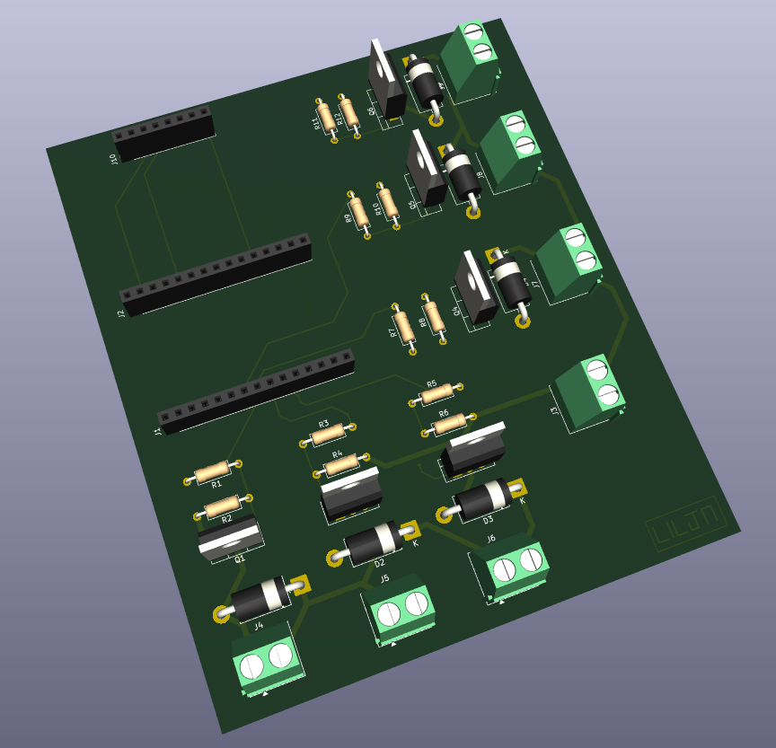
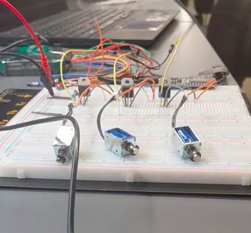
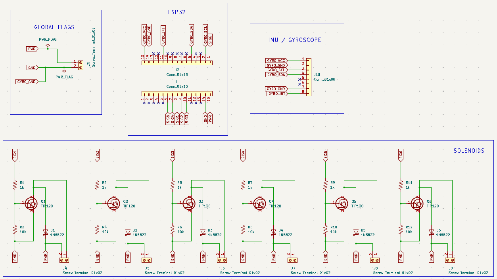
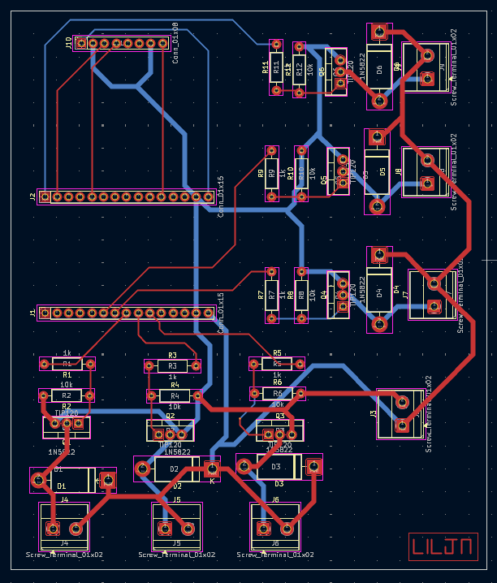

Haptic Sphere
CS Extended Reality (XR) Lab Research
This is my current research project in Purdue's CS XR Lab, which works on haptic devices for VR and Extended Reality (XR). I'm building a tennis ball sized device that you hold in your hand and that can pull in different directions, to simulate things like the electric force between charged particles.

This project is part of the Purdue CS XR Lab work on VR Haptics
Research
I started by looking at different ways to make the force: voice coil actuators, linear resonant actuators, and solenoids. Voice coil actuators would feel the best, but they cost around $200 each and need special drivers. Solenoids are about 25x cheaper and can be driven with just a transistor, so I went with those for the first prototype.
Prototype
The ball uses solenoids that hit the inside of the shell, with an ESP32 controlling them and an IMU to track which way the ball is facing. Each solenoid is switched by a TIP120 transistor with a flyback diode. I planned on three solenoids at first, but a push-pull solenoid only pushes in one direction (it springs back on its own), so covering both sides of each axis takes six.

Testing
On the bench, the solenoids switch on and off quickly, hit hard enough to be felt through the shell, and each draw about 1 A. Six of them at once is a lot of current for a battery at 5 V, so for now I'm powering everything from a bench supply.
Custom PCB
The breadboard wiring took up way more space than a tennis ball has, so I designed a two layer PCB in KiCad. It has the six solenoid drivers, headers for the ESP32 and IMU, and screw terminals for the solenoids and power.
This was a really good experience in PCB design (full schematic -> layout -> routing process). I learned a lot when making this, specifically with using nets in KiCad and using different-width routing depending on if I was working with power or just signals. I also learned a lot of helpful tools in KiCad such as using Global Flags.


Next Steps
Next I want to test how fast the ESP32 can fire the solenoids, design a shell to fit everything inside, and get the whole thing running off a battery.